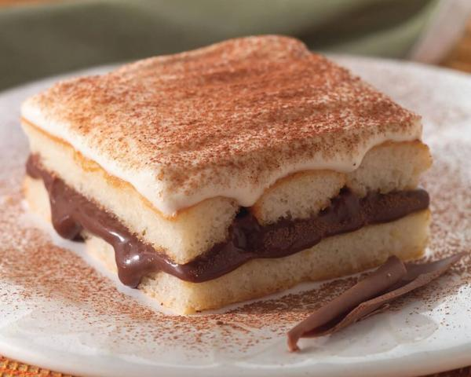

RECEITA DE PAVÊ
É pavê e cumê!
Essa receita de pavê de chocolate simples, é um absurdo de gostosa. Um clássico nas festas de fim de ano e nas confraternizações em família.

Ingredientes(8 porções)
- 1 pacote de bolacha maizena
- 1/2 copo de leite
- 1 colher (sobremesa) de chocolate em pó
Creme branco
- 1 lata de leite condessado
- 1 colher(sobremesa) de amido de milho
- 1 lata de leite de vaca(use a medida da lata de leite condenssado)
- 2 gemas
Creme de chocolate
- 1 lata de leite condesado
- 1 colher(sobremesa) de amido de milho
- 1 lata de leite de vaca(use a medida da lata de leite condensado)
- 2 gemas
- 4 colheres de chocolate em pó
Cobertura
- 4 claras
- 1 lata de creme de leite sem soro
- 4 colheres de açúcar
Modo de preparo
- Em uma tigela, misture o leite e o chocolate em pó até que esteja completamente dissolvido.
- Molhe as bolachas no leite e reserve.
- Creme branco
- Em uma panela, leve todos os ingredientes ao fogo médio e misture até obter uma consistência grossa e cremosa.
- Creme de chocolate
- Repita o processo feito pelo creme branco.
- Para a cobertura
- Bata as claras em neve com o açúcar até obter um creme consistente, adicione o creme de leite e misture delicadamente.
- Montagem
- Em um refratário grande, despeje o creme branco, metade das bolachas, creme de chocolate, bolachas e claras em neve.
- Repita o processo até preencher todo o refratário e leve à geladeira por 40 minutos.